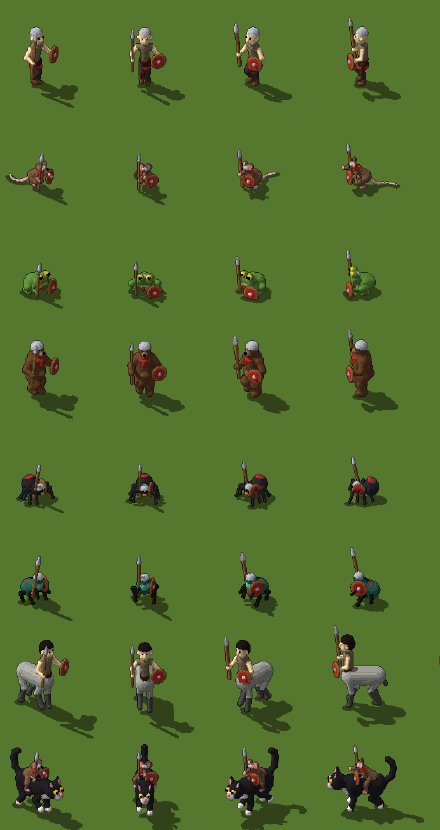
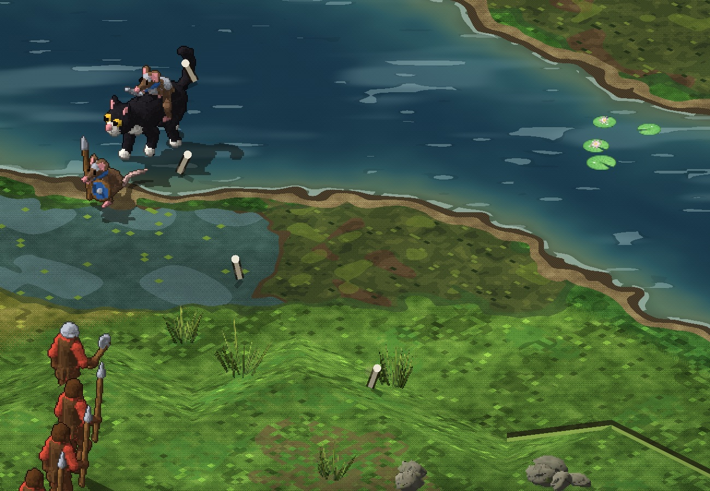
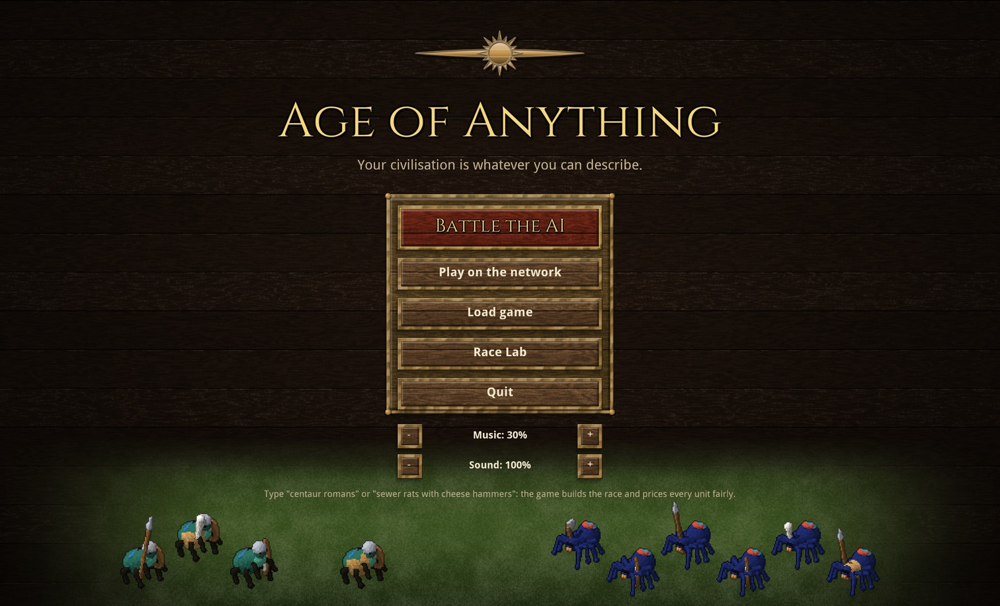
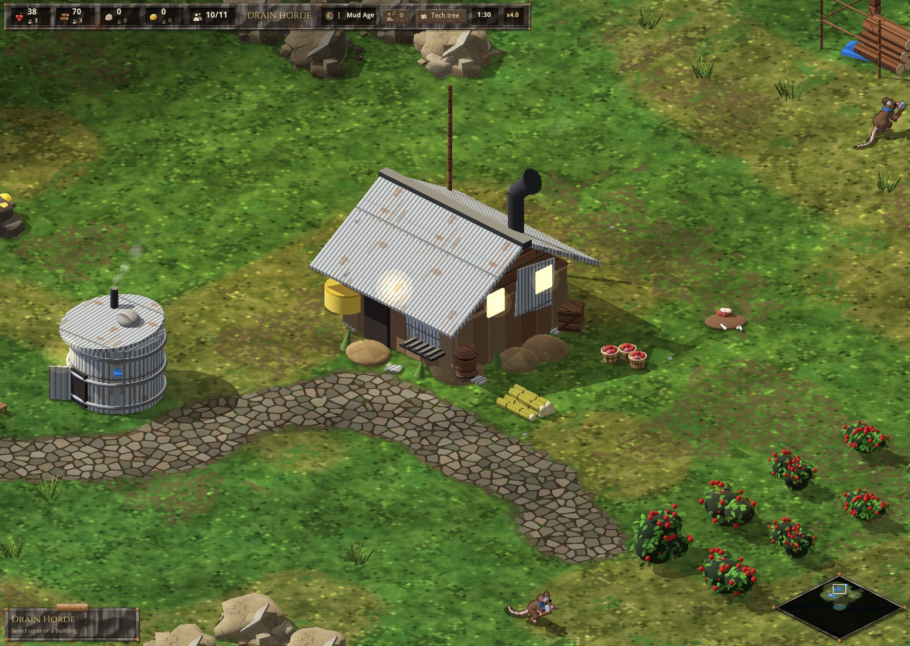

A real-time strategy engine, written in Lobster.
Creel runs the match: armies, economies, pathing, fog, sieges, the bots, saving and multiplayer. You bring the game: units, buildings, maps and rules, written as data and shared as packs. Every machine runs the same simulation tick for tick, so players stay in step and a match can be replayed exactly.
- whole numbers only
- 20 Hz fixed tick
- lockstep multiplayer
- signed packs
- Apache 2.0
The engine
The hard parts of an RTS, done once
An RTS has to be exact. Two players on two machines must see the same battle, a save must load next year, and a mod must not quietly change the rules for one player. Creel is built around that. It runs on macOS, Linux (the Steam Deck included) and Android.
The same match everywhere
The simulation uses whole numbers and a fixed 20 Hz tick, and only changes when a command arrives. No floats, no clocks, no stray randomness: give it the same commands and you get the same match, on any machine.
Lockstep multiplayer
Players send each other their commands, never the world, so a battle of a thousand units costs the network no more than a skirmish. Every 30 ticks each machine compares a hash of the world, so any drift is caught at once.
Saves that keep working
Update your game and old saves still load. New fields start empty, new unit columns are padded, and the save code is generated from the simulation itself, so nothing gets left out.
Data all the way down
Units, buildings, research, terrain, resources, bots, sounds and the look of the interface are JSON. A map is a text drawing. A creature is a description of its body, built into voxels and drawn in eight directions.
Packs with a fingerprint
A game and its mods are packs, merged in load order. Each one has a signature, a hash of everything inside it, so a lobby or a save knows exactly which rules a match is played with.
Hooks for the rest
When data can't say it, a pack adds a few Lobster functions. Rule hooks run inside the simulation and are checked for determinism. Interface hooks draw, play sounds and add to the HUD however they like.
Packs
A game is a folder of small files
This is what a Creel game looks like from the inside. These are real files from Age of Anything, shortened to fit. You can open any of them in a text editor and change them.
A map is a drawing
data/maps/reed_meadow.json · the first 12 of 64 rows
#############################################################DDD
#TTTTTTTTTTTTTTTTTTTTTT....................................,RDDD
#TTTTTTTTTTTTTTTTTTTTTT..................................,,RRDDD
#TTTTTTTTTTTTTTTTTTTTTT......T......TTTTTT..............,,RRDDRD
#.TT..TT.TT..TT.TT..TT.....TTTTT....TTTTTT............,,,,RDDRR#
#"""...T......T..TTTTT.....TTTTT.....................,,,,RDDDR,#
#""""............TTTTT.......T.................."""""",,RDDDR,.#
#"""""...........TTTTT.........................."""""",RDDDR,,.#
#"""..sss..........gg.......###...................,,,,RDDDR,,..#
#"""".ss...........gg.......###..................,,,,RDDDR,,...#
#""""...........................................,,,,RRDDRR,....#
#""".............bb....."""....................,,,,RRDDRR,.....#with a key
Each character stands for a kind of ground: grass, trees, reeds, gold, a river and the ford across it. The terrain file says what can be walked on, what can be gathered, and what a tile turns into once it's used up. Next to the drawing go the heights, the starting spots, the animals and the bridges, and a symmetry that keeps a two-player map fair.
"schema": "aow.map/2",
"width": 64, "height": 64,
"symmetry": "rotate",
"starts": [[12, 12], [51, 51]],
"legend": {
".": "grass", ",": "swamp", "\"": "reeds",
"#": "rock", "T": "tree", "s": "stone",
"g": "gold", "b": "bugbush",
"R": "river", "D": "deep_river", "f": "ford"
}A creature is a description
data/voxel/bodies/sheep.json · shortened
{
"skin": "#e4dccb", "pale": "#2e2622",
"size": 1.0, "fur": 0.12,
"points": {
"front": { "at": [0, 4.5, 11.5] },
"back": { "at": [0, -4.5, 11.5] },
"head": { "at": [0, 9.0, 14.0] }
},
"legs": [
{ "hip": ["front", 2.4, 0.5, -3.0], "foot": [2.4, 5.0, 1.0],
"stride": 2.4, "lift": 1.4, "bones": [3.86, 3.86],
"mats": ["skin", "pale"] },
{ "hip": ["back", 2.4, -0.5, -3.0], "foot": [2.4, -5.0, 1.0],
"stride": 2.4, "lift": 1.4, "bones": [3.86, 3.86],
"mats": ["skin", "pale"], "phase": 180 }
],
"shapes": [
{ "cap": ["back", 0, 0, 0], "to": ["front", 0, 0, 0],
"r": [5.6, 5.6], "mat": "skin" },
{ "ball": ["front", 0, 0.5, 2.5], "r": 4.4, "mat": "skin" },
{ "cap": ["head", 0, -0.5, 0.5], "to": ["head", 0, 3.0, -1.6],
"r": [2.0, 1.2], "mat": "pale" },
{ "bead": ["head", 1.5, 1.0, 0.0], "r": 0.4,
"mat": "eye", "mirror": true }
]
}and Creel builds it

Eight bodies, each written the same way and holding the same spear and shield. Creel builds them in voxels and draws them in eight directions (four shown). Legs walk by themselves: the engine works out the knee from the hip, the foot and the length of the bones.
A pack introduces itself
mods/scifi_test/mod.json · shortened
{
"id": "scifi_test",
"name": "Future soldiers (test)",
"version": "0.1.0",
"load_order": 100,
"depends": [],
"eras": ["scifi"],
"data": "data",
"models": ["models/scifi_parts.lobster"],
"check": {
"rules": "anything",
"prompts": ["future soldiers", "space marines"]
}
}and packs stack
Packs load in order. A later entry with the same id replaces an earlier one, "extends" copies
an entry and changes only what you name, and "remove" drops one. If a pack needs another that
isn't there, Creel tells you which. The checker loads your pack, lints its hooks, and plays a short match
twice to make sure both runs agree.
src/mod_check.sh scifi_test
./play.sh lobby mods:scifi_test rules:anythingHooks
Code, when you need it
Hooks are ordinary Lobster functions in your pack, compiled in when the game starts and called in load order. A hook no pack uses costs nothing. The first set covers what RTS games most often want to change.
| Rule hook | When it runs | For example |
|---|---|---|
ability(kind) | when a unit uses an ability, then every tick | a web that slows whatever walks into it |
on_hit(attacker, target, damage) | when a blow or a shot lands | arrows that stick and slow |
on_death(unit, killer) | when a unit dies | a carcass left behind to hunt |
on_built(building) | when a building is finished | a pen that starts breeding |
victory() | once a second | last army standing, or holding a wonder |
start(mode) | as the match begins | a fortress to defend, a siege to break |
Rule hooks run on every machine in step, so they use whole numbers, the simulation's own random numbers and a fixed order, and they keep their state where saves can find it. Interface hooks run on one machine and are free to draw over the world, add to the panel and the top bar, or play a sound when something happens.
Built with Creel
Age of Anything
A classic-style RTS where your civilisation is whatever you can describe. Type "centaur romans" or "sewer rats with cheese hammers", and it builds the race from a kit of parts, prices each unit by what it's made of, and you play a full match with it.
Every unit on screen is a voxel body built from data, and every match runs on Creel's simulation: the siege towers, the cat cavalry and the bots that command them.





Roadmap
Where Creel is going
Creel is in early development and not released yet. It already runs full matches; the work now is handing games and mods every lever, so nobody has to edit the engine to make the game they want.
Today
- The simulation: pathing on flow fields, fog, combat, economy, sieges and walls
- Bots at three levels, playing by the same commands as you
- Lockstep multiplayer over a local network
- Saves that survive updates
- Buildings found by what they do, so they can be called anything
- Packs of data and models, with a checker
- Voxel creatures from JSON
Next
- One pack format for games and mods, with every data file mergeable
- Signatures checked in every lobby and save
- Unit types as a plain table, for games with fixed factions
- The first rule and interface hooks
- A mods page in the lobby
Later
- Matches over the internet, peer to peer
- Turrets, turning circles, aircraft and anti-air, for new eras
- A scripting language for hooks, alongside Lobster
- The first public release: source, docs and a starter pack
Open source
Yours to build on
Creel will be released under the Apache License 2.0, in the spirit of the Spring engine and its successor Recoil: one engine shared by many games, each keeping its own content and its own licence.